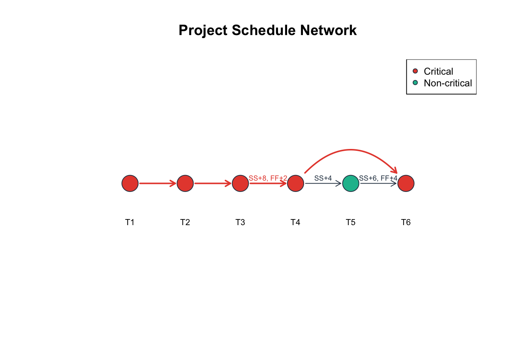
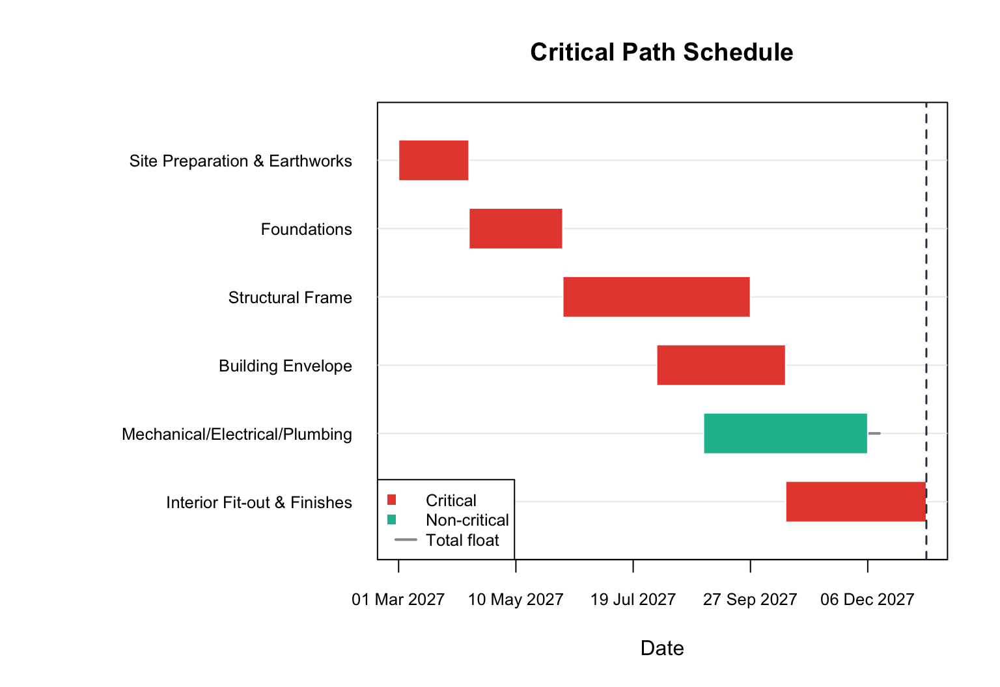
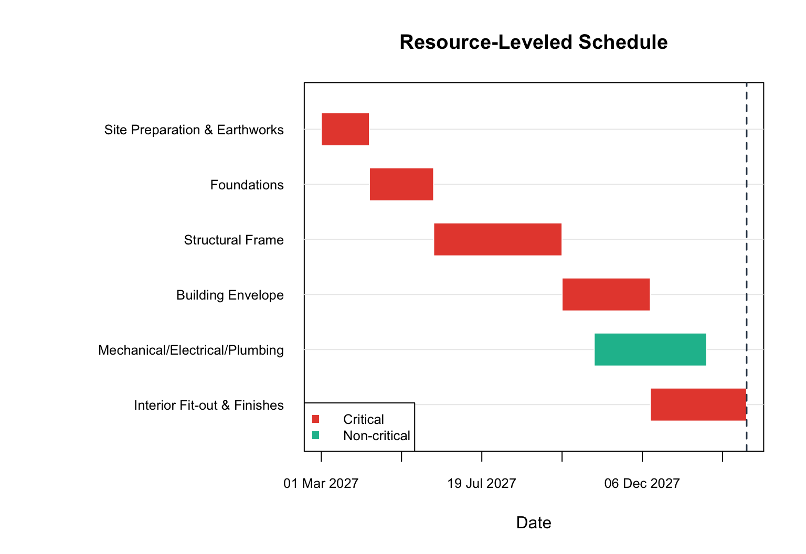
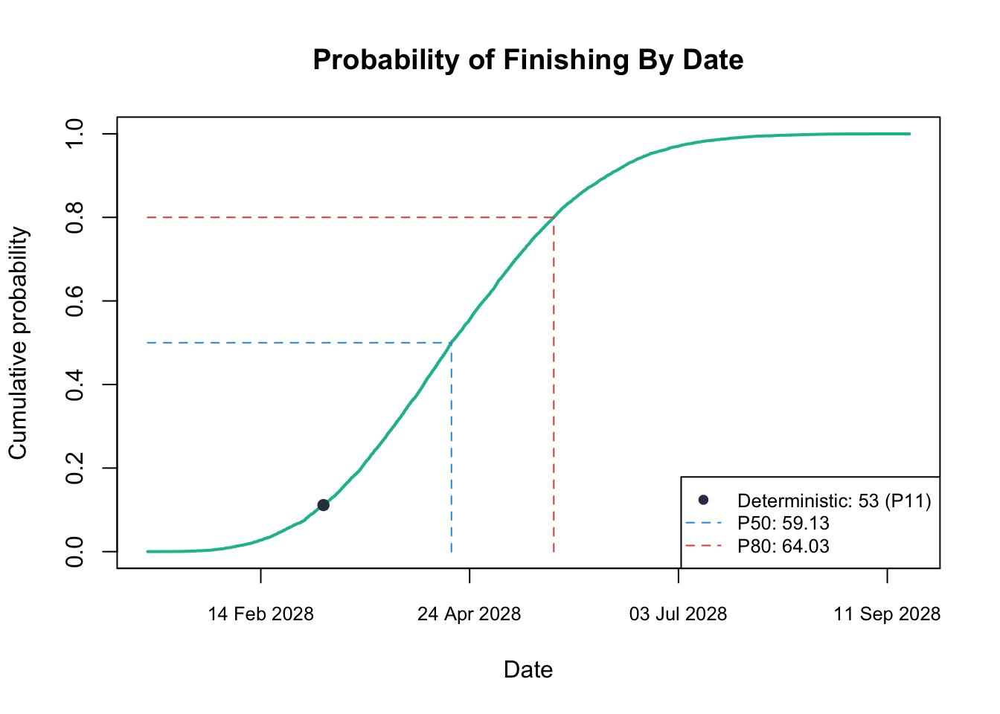
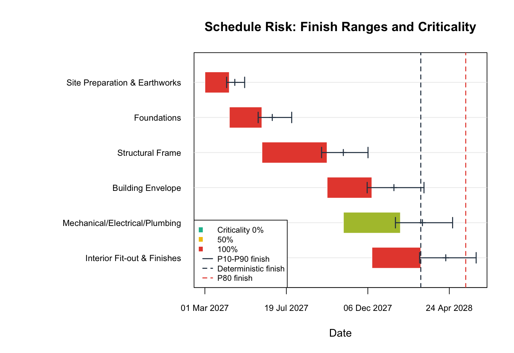
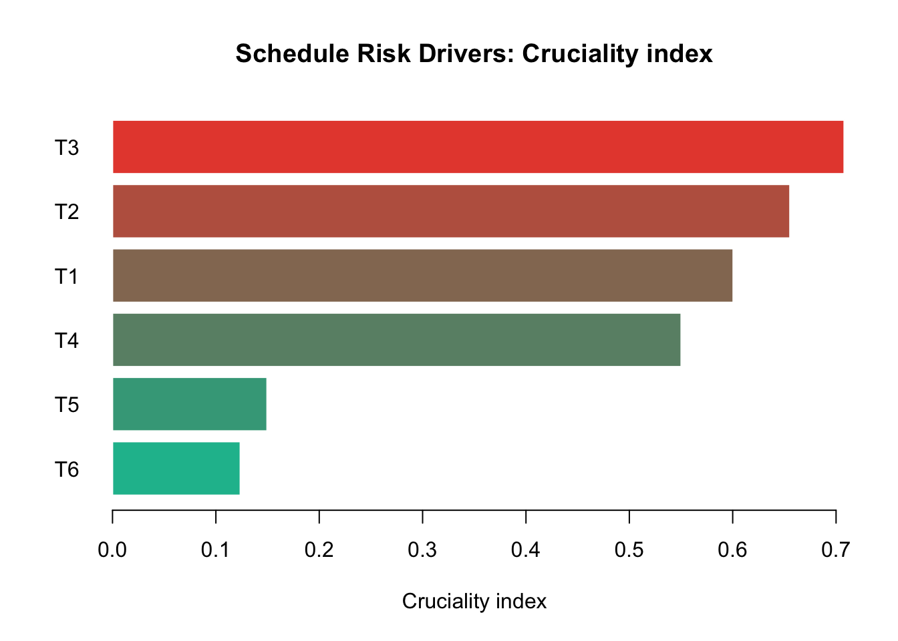
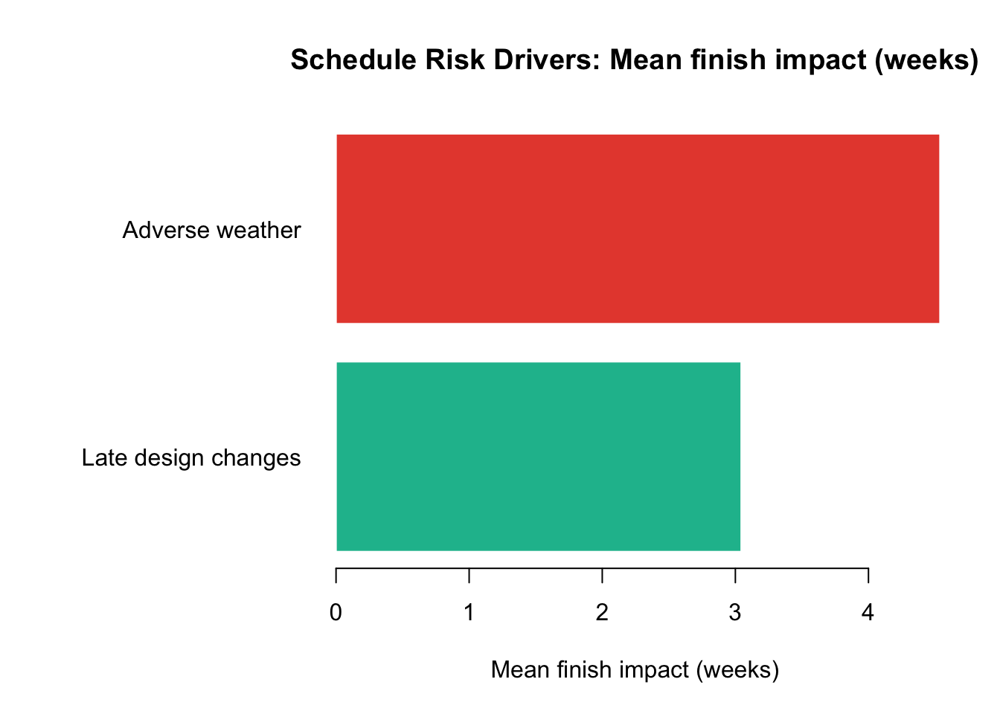
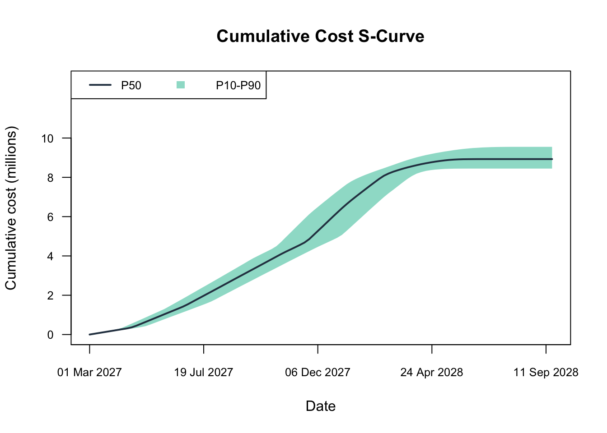
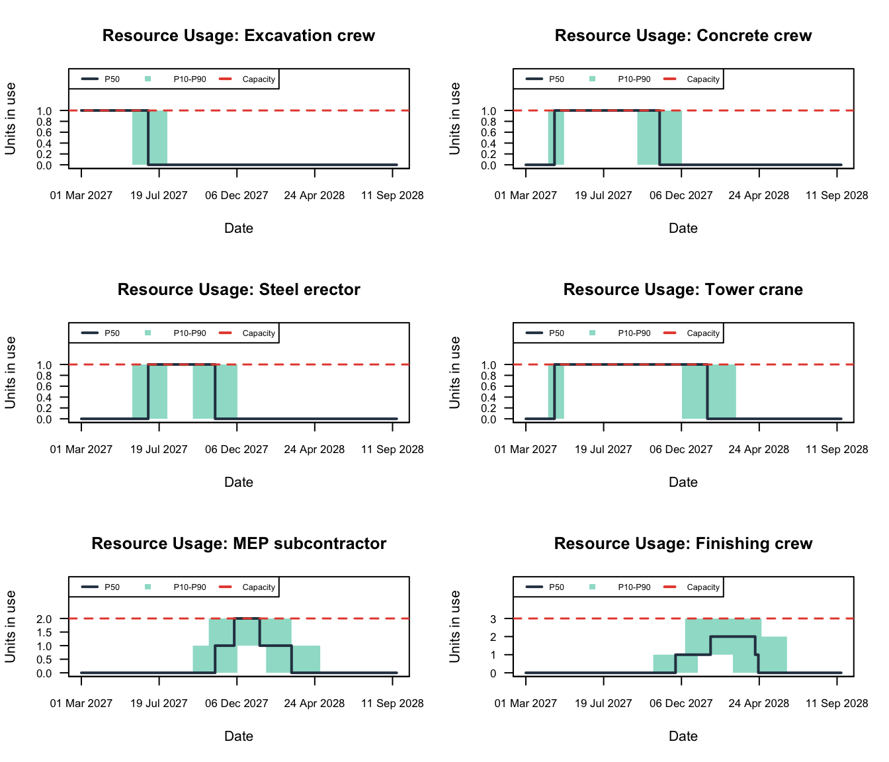

library(PRA)
set.seed(2027)
bp <- building_project9 Hurry Up and Wait: Critical Path and Schedule Risk Analysis
“It always takes longer than you expect, even when you take into account Hofstadter’s Law.” — Douglas Hofstadter
Monte Carlo simulation (Chapter 2) adds up task durations. That’s exactly right for a single chain of tasks, and it’s exactly wrong for almost every real schedule. Real schedules have parallel paths that merge, work that overlaps, and crews that two activities both need at the same time. A task list can’t see any of that. A schedule network can.
This chapter puts the network back in. We start with the critical path method (CPM), the deterministic backbone of every project schedule, then run it thousands of times with uncertain durations, uncertain productivity, and discrete risk events. That’s schedule risk analysis (SRA). Finally, we connect the probabilistic networks of Chapter 8 to the schedule, so that one risk can reach many tasks through the resources they share.
9.1 From Task Lists to Networks
A schedule network has activities (the nodes) and precedence links (the arrows). The precedence diagramming method allows four kinds of link, each with an optional lag (a delay) or lead (a negative lag):
| Link | Meaning | Constraint on the successor |
|---|---|---|
| FS (finish-to-start) | B can’t start until A finishes | start(B) ≥ finish(A) + lag |
| SS (start-to-start) | B can’t start until A has started | start(B) ≥ start(A) + lag |
| FF (finish-to-finish) | B can’t finish until A has finished | finish(B) ≥ finish(A) + lag |
| SF (start-to-finish) | B can’t finish until A has started | finish(B) ≥ start(A) + lag |
CPM schedules the network in two passes (Kelley and Walker 1959). The forward pass visits activities in dependency order and starts each one as early as its links allow, giving the early start and early finish of every activity and the project finish. The backward pass works back from the project finish and gives each activity’s late start and late finish: the latest it can run without delaying the project.
NoteFloat and the Critical Path
Total float is late start minus early start: how far an activity can slip without moving the project finish. Free float is how far it can slip without delaying any successor. Activities with zero total float form the critical path. Delay any of them and the whole project slips, day for day.
9.2 The Building Project Schedule
The building_project dataset includes a resource-loaded schedule for a six-package mid-rise building, in weeks:
bp$schedule_activities id name duration fixed_cost
1 T1 Site Preparation & Earthworks 6 200000
2 T2 Foundations 8 600000
3 T3 Structural Frame 16 1600000
4 T4 Building Envelope 11 1100000
5 T5 Mechanical/Electrical/Plumbing 14 1200000
6 T6 Interior Fit-out & Finishes NA 500000bp$schedule_links source target type lag
1 T1 T2 FS 0
2 T2 T3 FS 0
3 T3 T4 SS 8
4 T3 T4 FF 2
5 T4 T5 SS 4
6 T4 T6 FS 0
7 T5 T6 SS 6
8 T5 T6 FF 4The logic overlaps work the way real construction does. The envelope (T4) starts 8 weeks into the structural frame (SS+8) and can’t finish until 2 weeks after the frame does (FF+2). MEP rough-in starts 4 weeks into the envelope. Fit-out (T6) follows the envelope, may start 6 weeks into MEP, and finishes at least 4 weeks after it. Fit-out has no duration of its own: it’s 24 crew-weeks of work by two finishing crews, so its duration depends on how productive those crews are.
Resources carry a capacity and a weekly cost rate, and the assignments say who works on what:
bp$schedule_resources id capacity rate
1 Excavation crew 1 18000
2 Concrete crew 1 22000
3 Steel erector 1 30000
4 Tower crane 1 12000
5 MEP subcontractor 2 35000
6 Finishing crew 3 20000bp$schedule_assignments activity resource units work
1 T1 Excavation crew 1 NA
2 T2 Excavation crew 1 NA
3 T2 Concrete crew 1 NA
4 T3 Concrete crew 1 NA
5 T3 Steel erector 1 NA
6 T3 Tower crane 1 NA
7 T2 Tower crane 1 NA
8 T4 Tower crane 1 NA
9 T4 MEP subcontractor 1 NA
10 T5 MEP subcontractor 1 NA
11 T5 Finishing crew 1 NA
12 T6 Finishing crew 2 24There is only one tower crane, and the foundations, the frame and the envelope all need it. Hold that thought.
project_schedule() checks all of this and assembles the network. Durations of T1 to T5 are triangular, correlated through the task correlation matrix, and two discrete risk events come from the risk register:
proj <- project_schedule(
activities = bp$schedule_activities,
links = bp$schedule_links,
duration_dists = bp$duration_dists,
resources = bp$schedule_resources,
productivity_dists = bp$productivity_dists,
assignments = bp$schedule_assignments,
risks = bp$risk_register,
cor_mat = bp$cor_mat[1:5, 1:5],
start_date = bp$start_date,
time_unit = "weeks"
)plot(proj)
9.3 The Deterministic Plan
plan <- cpm(proj)
planCritical Path Method
Project finish: 45 weeks
Critical path: T1 -> T2 -> T3 -> T4 -> T6
id duration ES EF LS LF total_float free_float critical
T1 6 0 6 0 6 0 0 TRUE
T2 8 6 14 6 14 0 0 TRUE
T3 16 14 30 14 30 0 0 TRUE
T4 11 22 33 22 33 0 0 TRUE
T5 14 26 40 27 41 1 1 FALSE
T6 12 33 45 33 45 0 0 TRUEThe plan finishes in 45 weeks. Every activity except MEP is critical; MEP has 1 week of float.
plot(plan)
9.3.1 Leveling the Crane
The plan has a problem: the envelope starts while the frame is still using the crane. With level = TRUE, cpm() schedules activities one at a time with a serial schedule-generation scheme (Kolisch 1996). It takes the eligible activity with the smallest late start and places it at the earliest time that satisfies its links and keeps every resource within capacity for the activity’s whole duration.
leveled <- cpm(proj, level = TRUE)
leveled$finish - plan$finish[1] 8plot(leveled)
One crane costs 8 weeks. Once resources move dates, float stops meaning much, so cpm() finds the critical activities differently: it traces the driving path back from the finish, through links that bind and through resource hand-offs.
9.4 Merge Bias: Why Networks Finish Late
Before adding uncertainty to the building project, it’s worth seeing the effect that makes network analysis necessary. Two 10-week activities run in parallel, each estimated as triangular from 8 to 12 weeks:
parallel <- project_schedule(
activities = data.frame(id = c("Start", "X", "Y", "Finish"),
duration = c(0, 10, 10, 0)),
links = data.frame(source = c("Start", "Start", "X", "Y"),
target = c("X", "Y", "Finish", "Finish")),
duration_dists = list(
X = list(type = "triangular", a = 8, b = 10, c = 12),
Y = list(type = "triangular", a = 8, b = 10, c = 12)
)
)
par_risk <- sra(parallel, num_sims = 10000)
par_risk$prob_deterministic[1] 0.2528Each path alone has a 50% chance of finishing in 10 weeks. The project needs both to finish, so its chance is about 25%. This is merge bias: wherever paths converge, the finish is set by whichever runs longest, so the expected finish is later than any single path suggests, even when every estimate is symmetric. Summing durations along one path can never show it.
9.5 Schedule Risk Analysis
sra() samples every uncertain quantity in each iteration, reschedules the network with CPM, and records the result. Here we keep the crane constraint in every iteration:
risk <- sra(proj, num_sims = 10000, level = TRUE)
riskSchedule Risk Analysis (resource-leveled)
Iterations: 10,000
Deterministic finish: 53 weeks (P11)
Mean finish: 59.46 weeks SD: 5.341
Finish percentiles:
10% 50% 80% 90%
52.70 59.13 64.03 66.59
Cost percentiles:
10% 50% 80% 90%
8446000 8928000 9320000 9552000
Most critical activities:
id criticality cruciality
T1 1 0.600
T2 1 0.655
T3 1 0.708
T4 1 0.550
T6 1 0.124plot(risk, type = "cdf")
The leveled plan of 53 weeks has a probability of only 11% of being met. The P80 is 64 weeks. The difference between the P80 and the P50 is the schedule contingency, and contingency() from Chapter 2 works on the result directly:
contingency(risk, phigh = 0.80, pbase = 0.50) 80%
4.899769 9.5.1 What Drives the Finish?
Knowing the finish distribution isn’t enough; you need to know where to act. sra() measures each activity four ways:
NoteCriticality Measures
- Criticality index: the share of iterations in which the activity is critical.
- Sensitivity: the rank correlation between the activity’s duration and the project finish.
- Cruciality index: criticality × sensitivity (Williams 1992). It ranks activities by how much they actually move the finish.
- Schedule sensitivity index (SSI): criticality × the activity’s duration spread relative to the finish’s spread (Project Management Institute 2009).
summary(risk)$activities id mean_duration mean_finish finish_p90 criticality sensitivity cruciality
3 T3 17.311355 34.203876 40.042984 1.0000 0.7077921 0.7077921
2 T2 9.436658 16.892521 21.308794 1.0000 0.6553336 0.6553336
1 T1 7.455863 7.455863 9.758659 1.0000 0.6004118 0.6004118
4 T4 12.484443 46.688319 53.781623 1.0000 0.5500970 0.5500970
5 T5 15.470199 53.674074 60.807122 0.3463 0.4316334 0.1494747
6 T6 12.354790 59.464645 66.589998 1.0000 0.1236098 0.1236098
ssi
3 0.4660948
2 0.3201912
1 0.3196944
4 0.4226452
5 0.1650301
6 0.1554023Criticality alone can mislead. Fit-out (T6) is critical in every iteration, but its duration varies little, so it has low cruciality: shortening its uncertainty buys little. The frame and foundations are where uncertainty turns into delay.
plot(risk, type = "gantt")
plot(risk, type = "tornado")
9.5.2 Risk Events
The two events in the register (adverse weather and late design changes) each occur independently with their stated probability and add a sampled delay and cost to the activities they affect:
risk$risk_stats id prob occurrence finish_impact cost_impact rank
1 Adverse weather 0.35 0.3377 4.537394 240229.6 1
2 Late design changes 0.25 0.2480 3.043668 606524.7 2finish_impact is the mean finish when the risk occurred minus the mean when it didn’t. Rank risk responses by it:
plot(risk, type = "tornado", metric = "risk")
9.5.3 Cost and Resources Over Time
Every activity’s cost (resource units × rate × duration, plus fixed cost and any risk costs) is spread over its dates, giving a cost S-curve with an uncertainty band. Resource usage gets the same treatment, and with leveling it never exceeds capacity:
plot(risk, type = "cost")
plot(risk, type = "resources")
9.6 Risks That Flow Through Resources
The risk register treats every risk as independent and aims it at specific activities. Real risks don’t behave that way. A regional construction boom tightens the labor market and the supply chain at the same time, and a labor shortage doesn’t hit one activity: it slows every activity that uses the affected crews.
The probabilistic networks of Chapter 8 capture the first part: risks that share a root cause. project_schedule() connects such a network to the schedule through risk_effects, which link network nodes to resources. A productivity effect slows every activity assigned to the resource; a rate effect raises its cost.
boom_net <- prob_net(
data.frame(id = c("Boom", "Labor", "Supply")),
data.frame(source = c("Boom", "Boom"), target = c("Labor", "Supply")),
list(
Boom = list(type = "discrete", values = c(1, 0), probs = c(0.4, 0.6)),
Labor = list(type = "conditional", condition = "Boom",
true_dist = list(type = "discrete", values = c(1, 0), probs = c(0.8, 0.2)),
false_dist = list(type = "discrete", values = c(1, 0), probs = c(0.15, 0.85))),
Supply = list(type = "conditional", condition = "Boom",
true_dist = list(type = "discrete", values = c(1, 0), probs = c(0.7, 0.3)),
false_dist = list(type = "discrete", values = c(1, 0), probs = c(0.1, 0.9)))
)
)
boom_effects <- list(
# A labor shortage slows both crews that MEP and fit-out depend on.
list(node = "Labor", resources = c("MEP subcontractor", "Finishing crew"),
effect = "productivity",
magnitude = list(type = "pert", a = 0.7, b = 0.85, c = 0.95)),
# Supply-chain pressure raises concrete and steel costs.
list(node = "Supply", resources = c("Concrete crew", "Steel erector"),
effect = "rate",
magnitude = list(type = "uniform", min = 1.1, max = 1.3))
)
proj_boom <- project_schedule(
activities = bp$schedule_activities,
links = bp$schedule_links,
duration_dists = bp$duration_dists,
resources = bp$schedule_resources,
productivity_dists = bp$productivity_dists,
assignments = bp$schedule_assignments,
risks = bp$risk_register,
cor_mat = bp$cor_mat[1:5, 1:5],
start_date = bp$start_date,
time_unit = "weeks",
risk_net = boom_net,
risk_effects = boom_effects
)
risk_boom <- sra(proj_boom, num_sims = 10000, level = TRUE)
rbind(register_only = risk$percentiles, with_network = risk_boom$percentiles) 10% 50% 80% 90%
register_only 52.70257 59.12902 64.02879 66.59000
with_network 53.67842 61.21033 66.42246 69.37558One labor-shortage node now slows three activities at once (the envelope, MEP and fit-out, through the two crews), and because labor and supply share a root cause, bad news arrives in clusters. The node statistics show how each part of the network moves the finish and cost:
risk_boom$risk_net_stats id kind occurrence mean finish_impact cost_impact finish_sensitivity
1 Boom event 0.3973 0.3973 2.768507 365813.1 0.2195863
2 Labor event 0.4068 0.4068 4.404207 445407.2 0.3499196
3 Supply event 0.3412 0.3412 1.715385 359784.5 0.1304382
cost_sensitivity rank
1 0.3432009 2
2 0.4205138 1
3 0.3256622 3
WarningSeeing Is Not Doing (Again)
Supply only raises cost rates, yet it shows a finish impact. That’s not a bug: finish_impact compares iterations where a node fired with those where it didn’t, so Supply borrows some of Labor’s delay through their shared parent, Boom. This is the seeing comparison from Chapter 8. Before deciding which risk to mitigate, ask what happens when you intervene on it, which is a different question.
9.7 The Core Functions
| Function | Purpose |
|---|---|
project_schedule() |
Validates and assembles activities, links, distributions, resources, assignments, risks and risk networks |
cpm() |
Deterministic critical path schedule, optionally resource-leveled |
sra() |
Monte Carlo schedule risk analysis: reruns CPM in every iteration |
plot() |
Network, Gantt, finish, CDF, tornado, cost and resource views of all three |
9.8 Summary
9.9 Exercises
Float in practice. MEP (T5) has one week of float in the deterministic plan. Increase its duration by 2 weeks in
bp$schedule_activitiesand reruncpm(). What happens to the project finish and the critical path? Why?Buy a second crane. ★ Change the tower crane’s capacity from 1 to 2 and rerun the leveled
sra(). How much does the P80 finish improve? Weigh that against the crane’s cost (its rate is inbp$schedule_resources).Remove the overlap. Replace the SS+8 and FF+2 links between the frame (T3) and the envelope (T4) with a single finish-to-start link. How does the deterministic finish change? What does that tell you about the value of overlapping work?
Critical but not crucial. Explain why fit-out (T6) can have a criticality index of 1 but a low cruciality index. What would you need to change in the model for T6 to become crucial?
Mitigate the shortage. ★ Halve the probability that
Laboroccurs whenBoomis active (from 0.8 to 0.4) and rerun the analysis with the risk network. How much does the P80 finish move? DoesSupply’s finish impact change, even though you didn’t touch it?